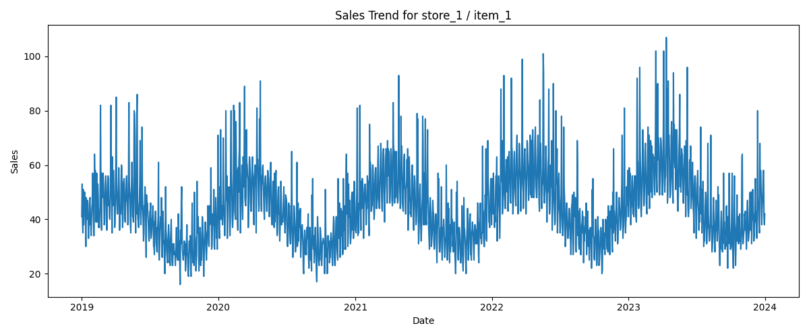

Demand Forecasting Report
Single Time-Series Analysis (Store 1 - Item 1)
This report analyzes the sales behavior of a single store-item pair over time to understand demand patterns and forecasting challenges.
Sales Trend

Key Insights
- Strong seasonality: clear yearly and weekly patterns
- Upward trend: gradual increase in demand over time
- High variability: frequent spikes and fluctuations
- Noisy signal: requires robust modeling approach
Business Interpretation
Demand is influenced by time-based patterns and external factors such as promotions.
The presence of spikes suggests reactive demand behavior.
Modeling Implications
- Use lag features (t-1, t-7, t-30)
- Include rolling statistics
- Capture calendar features
- Use tree-based models like LightGBM or XGBoost
Conclusion
This time series exhibits seasonal patterns, growth trends, and irregular spikes.
Accurate forecasting requires capturing all these components.